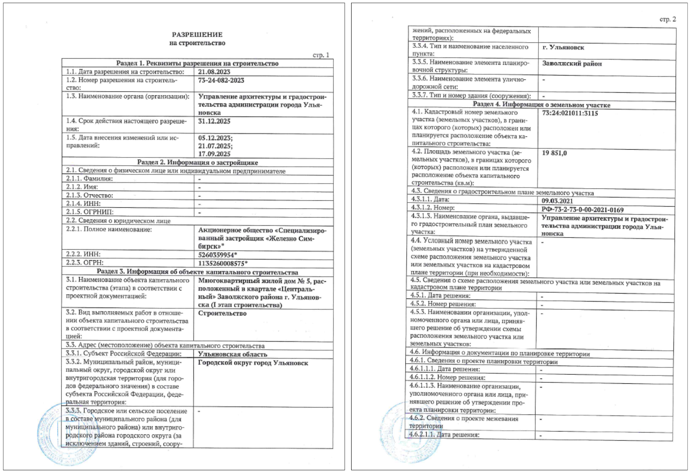
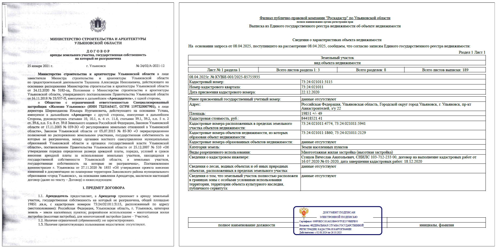
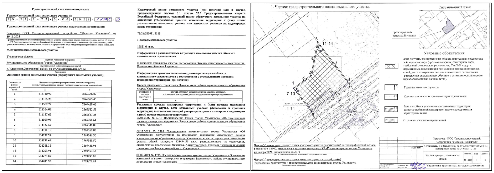
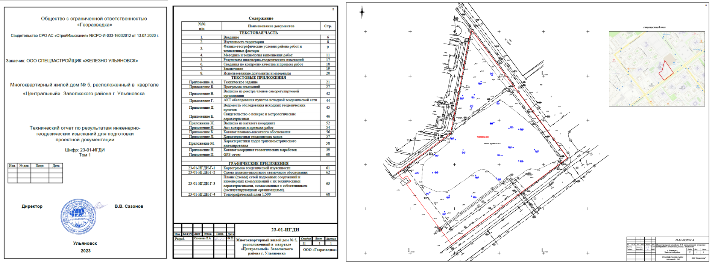
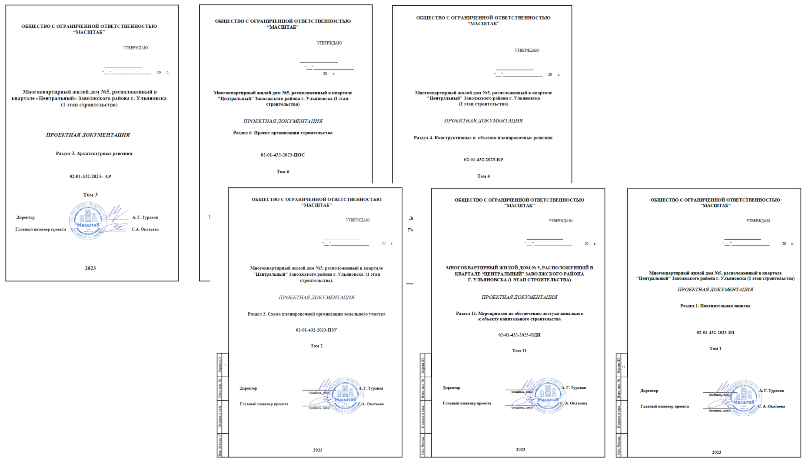
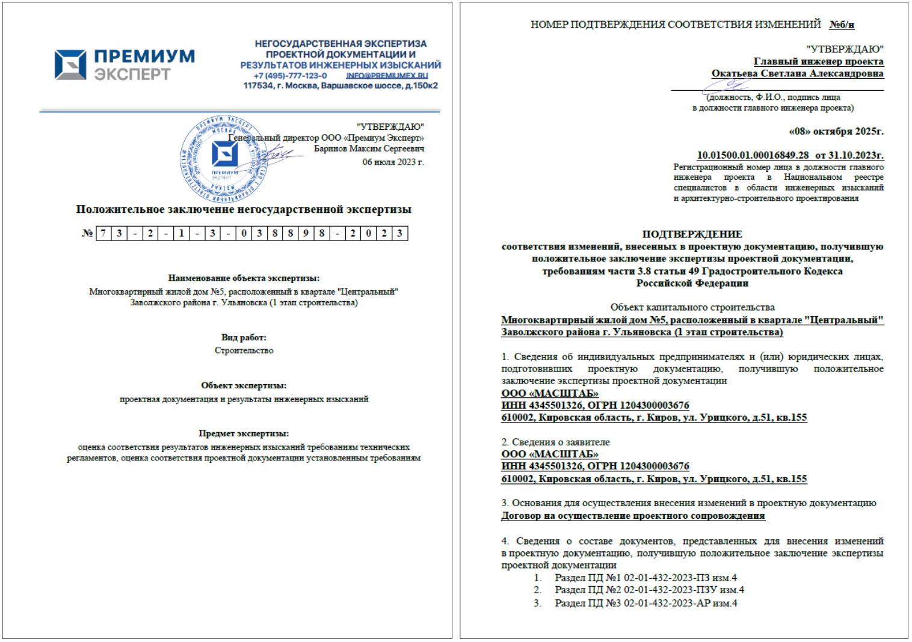
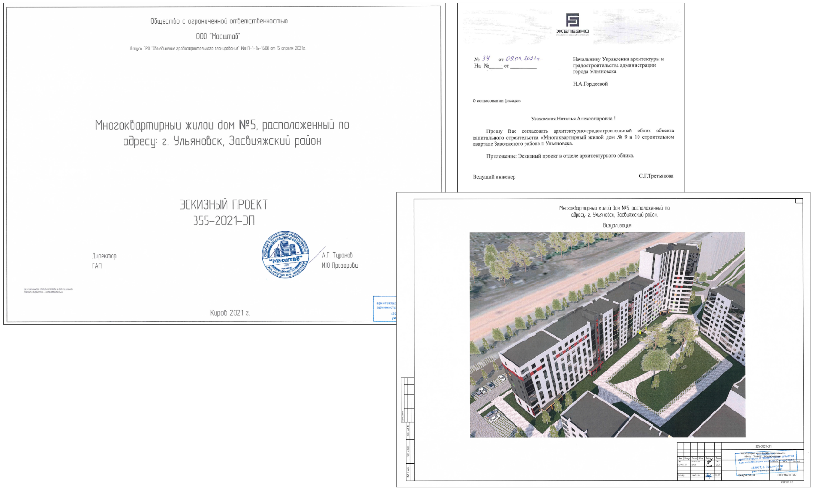

Когда требуется ГСН
Что такое ГАСН или ГСН и когда он требуется
Что такое ГАСН или ГСН
В настоящее время правильно называть ГСН – государственный строительный надзор, а ГАСН – государственный архитектурно-строительный надзор так ранее называли органы власти в момент их зарождения 2004-2006 гг.
ГСН – государственный строительный надзор, это орган исполнительной власти, на который возложены полномочия по осуществлению регионального государственного строительного надзора.
Существует два надзора: Федеральный государственный строительный надзор – как правило осуществляется на сложных и уникальных объектах капитального строительства (мосты, электростанции, гидротехнические сооружения итд) и осуществляет его Федеральная служба РОСТЕХНАДЗОР, и региональный государственный строительный надзор – осуществляется на объекта указанных в ст.54 Градостроительного Кодекса РФ (многоквартирный жилые дома, социальные и производственные объекты), осуществление возложено на органы исполнительной власти субъектов РФ.
Когда требуется ГСН
Государственный строительный надзор осуществляется в соответствие со ст.54 при строительстве или реконструкции объектов капитального строительства, проектная документация которых подлежит экспертизе проектной документации. В основной своей массе это объекты жилищного строительства (МКД), социальные объекты (школы, больницы, крупные торговые центры) и производственные (крупные склады, производственные объекты).
Что такое РНС и как его получить
Что такое РНС
РНС – разрешение на строительство — это документ, подтверждающий соответствие проектной документации требованиям установленными градостроительным регламентом, и дает право застройщикам осуществлять строительство или реконструкцию.

Как получить РНС
Чтобы получить разрешение на строительство необходимо предоставить в орган местного самоуправления по месту нахождения земельного участка документы:
- правоустанавливающие документы на земельный участок (договора аренды, выписки ЕГРН)

- градостроительный план земельного участка (документ содержит информацию: разрешенное использование, допустимые параметры строительства ограничения, градостроительные нормы применимые к земельному участку)

- результаты инженерных изысканий (отчет по геодезии и экологии)

- проектная документация (прикладываются 6 основных разделов)

- положительное заключение экспертизы проектной документации (а в случае внесения изменений в проект дополнительно справка ГИПа)

- согласование архитектурно-градостроительного облика

- иные документы согласно ч. 7 ст. 51 ГрК
Ч. 17 ст. 51 ГрК определены случаи, когда разрешение на строительство не требуется. Например, при строительстве некапитальных объектов, индивидуального строительства, вспомогательных сооружений и капитальном ремонте.